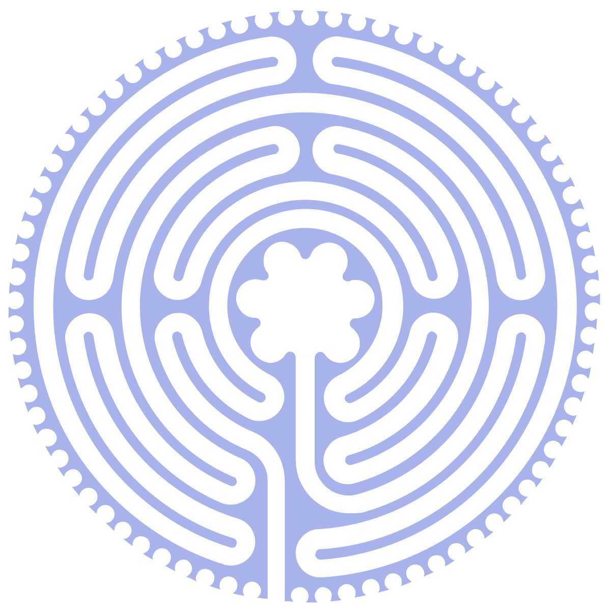

Side One
- "Opening Titles Including Underground"
- "Into the Labyrinth"
- "Magic Dance"
- "Sarah"
- "Chilly Down"
- "Hallucination"
Side Two
- "As the World Falls Down"
- "The Goblin Battle"
- "Within You"
- "Thirteen O'Clock"
- "Home at Last"
- "Underground"

|  | Home |
Cast |
Soundtrack |
|---|
The Labyrinth (1986) album is the official soundtrack to the
fantasy film of the same name, featuring music by
David Bowie and
Trevor Jones.
David Bowie contributed five original songs,
including: